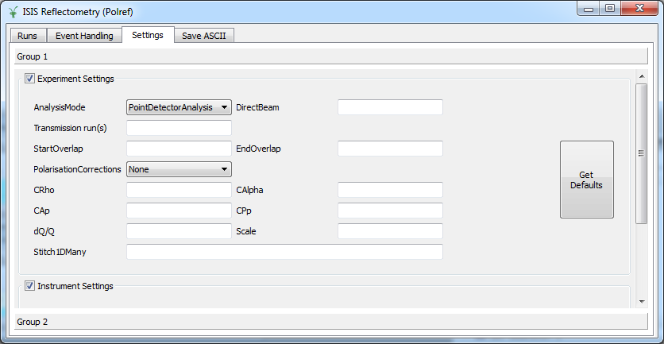
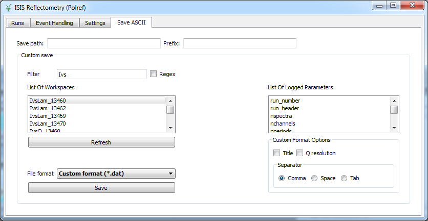

Reflectometry Changes#
Algorithms#
New versions of algorithms ReflectometryReductionOne v2 and CreateTransmissionWorkspace v2 have been added. The new versions fix the following issues:
Duplicate steps, such as ConvertUnits v1 and Rebin v1, have been removed.
Monitor normalization has been refactored. An improvement in performance of a factor x3 has been observed when the reduction is performed with no monitor normalization.
The monitor and detectors of interest are first extracted from the input workspace before being converted to wavelength. This fixes a problem by which the first monitor was distorting the rest of the data due to
AlignBinsin ConvertUnits v1.
New versions of ReflectometryReductionOneAuto v3, CreateTransmissionWorkspaceAuto v2 and SpecularReflectionPositionCorrect v2 have been added. The new versions fix the following known issues:
When
CorrectionAlgorithmwas set toAutoDetectthe algorithm was not able to find polynomial corrections, as it was searching forpolynomialinstead ofpolystring.When a correction algorithm was applied, monitors were integrated if
NormalizeByIntegratedMonitorswas set to true, which is the default. In the new version of the algorithms, monitors will never be integrated if a correction algorithm is specified, even ifNormalizeByIntegratedMonitorsis set to true.Fix some problems when moving the detector components in the instrument. The new versions use
ProcessingInstructionsto determine which detector components need to be moved. Detectors will be moved to an angle \(2\theta\) if \(\theta\) is specified. If \(\theta\) is not provided, detectors will not be moved.Monitor integration range was not being applied properly to CRISP data. The problem was that in the parameter file the wavelength range used to crop the workspace in wavelength is [0.6, 6.5] and the monitor integration range is outside of these limits ([4, 10]). This was causing the algorithm to integrate over [0.6, 4].
ReflectometryReductionOneAuto v3 now outputs three workspaces: a workspace in wavelength, a workspace in Q with native binning, and a rebinned and scaled workspace in Q. The latter is rebinned according to
MomentumTransferMin,MomentumTransferMaxandMomentumTransferStep. If these are not provided, the algorithm will attempt to determine the bin width running CalculateResolution <http://docs.mantidproject.org/v3.9.0/algorithms/CalculateResolution-v1.html>. When this is not possible, the rebinning will not take place.
Stitch1D v3 documentation has been improved, it now includes a workflow diagram illustrating the different steps in the calculation and a note about how errors are propagated.
Stitch1DMany has a new property,
ScaleFactorFromPeriod, which enables it to apply scale factors from a particular period when stitching multi-period runs. Its documentation has also been updated and improved, including more detail on algorithm properties and adds a workflow description and diagram.ConvertToReflectometryQ v2 corrects the detector position before performing any type of calculation. Detectors are corrected to an angle \(\theta\) read from the log value stheta.
Instrument definition files and parameter files#
INTER parameter file was updated. The monitor background range, wavelength range and point detector range were updated, and two additional properties,
TransRunStartOverlapandTransRunEndOverlap, that specify the integration range to be used by Stitch1D v3, have been added.OFFSPEC parameter file was updated with
TransRunStartOverlapandTransRunEndOverlapPOLREF parameter file was updated with a new monitor background range, point detector range and parameters
TransRunStartOverlapandTransRunEndOverlap.SURF parameter file was updated with a new multi detector range.
Reflectometry Reduction Interfaces#
ISIS Reflectometry (Polref)#
A new tab, ‘Event handling’ has been added. This tab allows users to select custom time slices to analyze event data.
A new tab, ‘Settings’ has been added. This tab displays global options for experiment and instrument settings.
A new tab, ‘Save ASCII’ has been added. This tab is similar in function and purpose to the ‘Save Workspaces’ window accessible from Interfaces->ISIS Reflectometry->File->Save Workspaces.
{kind=link}

{kind=link}

The interface is now arranged in two different groups. Groups apply to tabs ‘Run’, ‘Event Handling’ and ‘Settings’.
When runs are transferred to the processing table groups are now labeled according to run title.
StartOverlapandEndOverlapare used to calculate the integration range in Stitch1DMany v1, when specified.Column
dQ/Qis used as the rebin parameter to stitch workspaces.An issue by which the interface was not populating
dQ/Q,Q minandQ maxcorrectly for multi-period datasets has been fixed.A shift in Y between different slices has been fixed.
When the instrument is changed from the GUI, the Mantid default instrument is updated accordingly.
Error messages are displayed if the user either attempts to transfer zero runs or transfer runs with a different strategy to the one they used to search for runs with.
Fixed a bug where if the user answered ‘no’ to a popup asking if they wanted to process all runs, the progress bar would show activity as though a data reduction was occurring.
Documentation regarding the interface has been updated accordingly.
ISIS Reflectometry#
Processing runs now produces the un-binned IvsQ workspace as well.
Error in transfer button not working fixed.
Error in ‘Save Workspaces’ dialog not populating the save path correctly fixed.